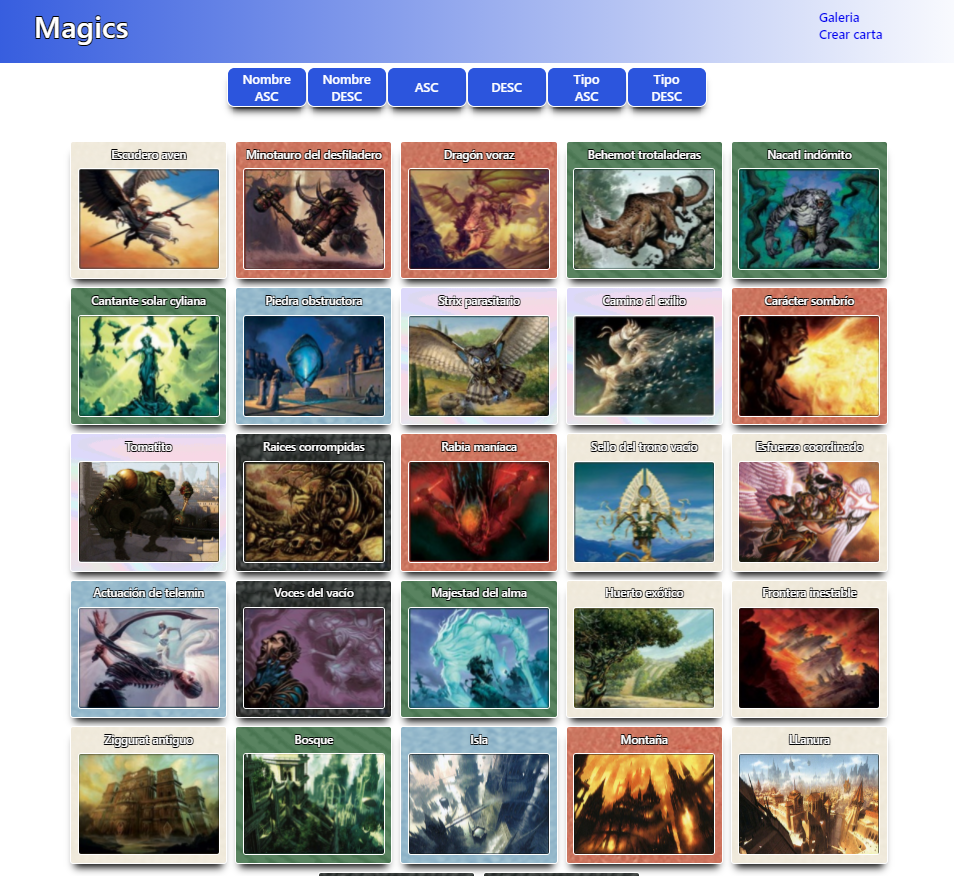
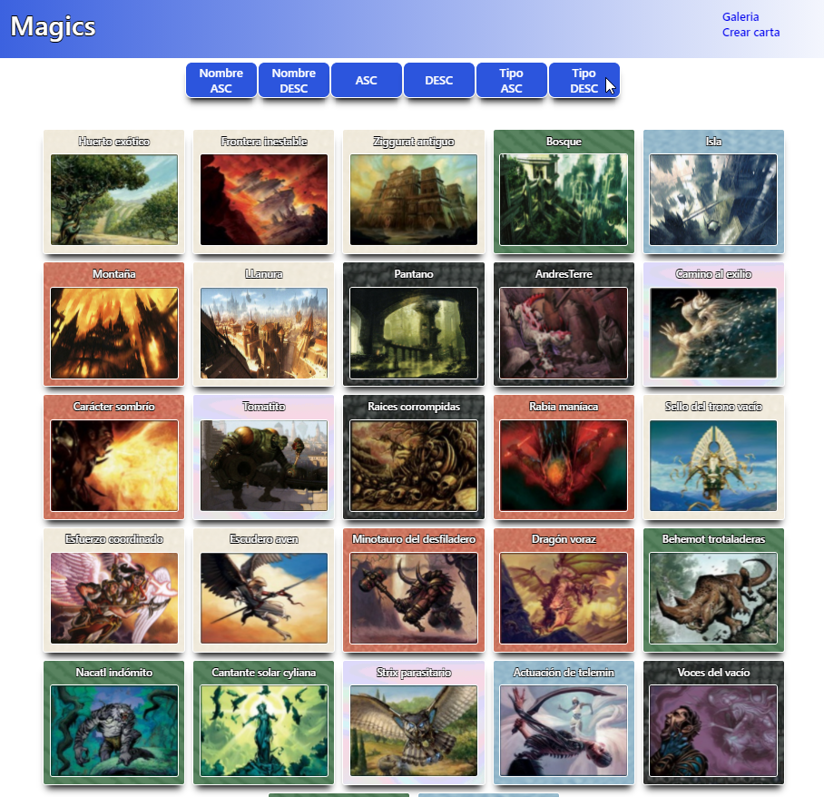
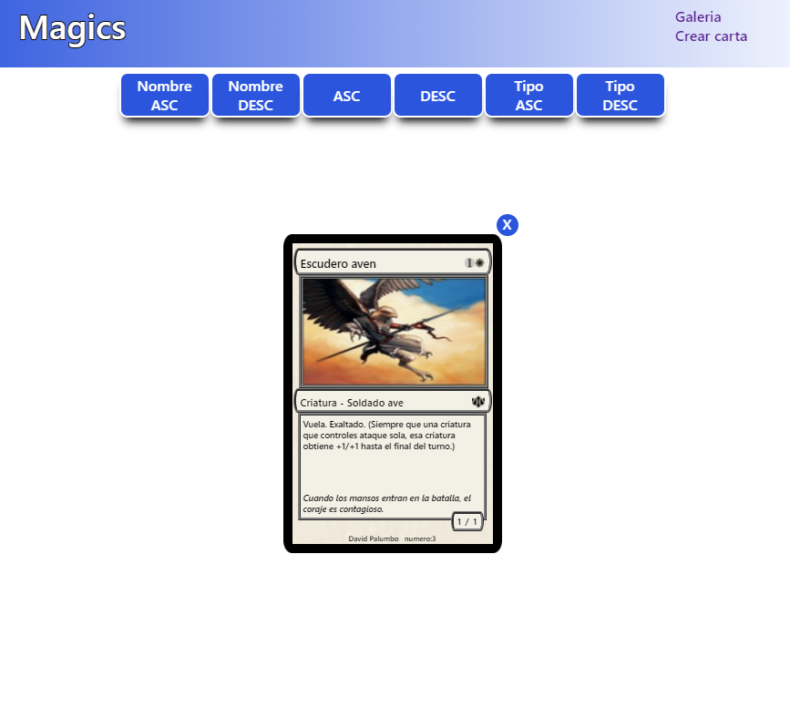
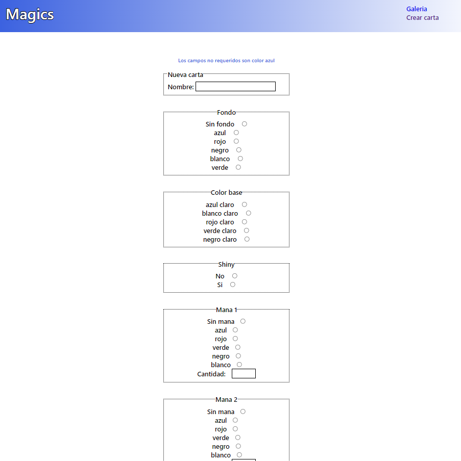
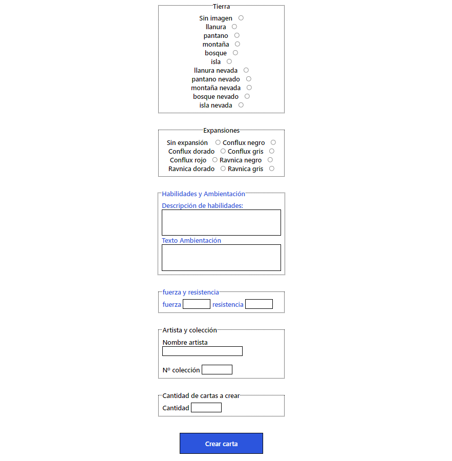

Proyecto Galería Cartas
La primera visualización de la galería se presenta como thumnails por lo que se muestran la mayor cantidad de cartas posibles en pantalla correctamente visualizadas, el diseño de la aplicación es RWD para ordenador, tablet, smartphone...

Visualización de la estructura de la carta y su contenido, sin recargar la página.
Existen cartas de todos los tipos (Instantáneos, Criaturas, Conjuros...)
y todos los colores y con cantidad y tipo de mana variado.
Fomulario para inserción de nuevas cartas
Te invito a que crees una carta basandote en la original o inventada.
AAAAA
AAAA
eeeeee

Visualización de la estructura de la carta y su contenido, sin recargar la página.
Existen cartas de todos los tipos (Instantáneos, Criaturas, Conjuros...)
y todos los colores y con cantidad y tipo de mana variado.